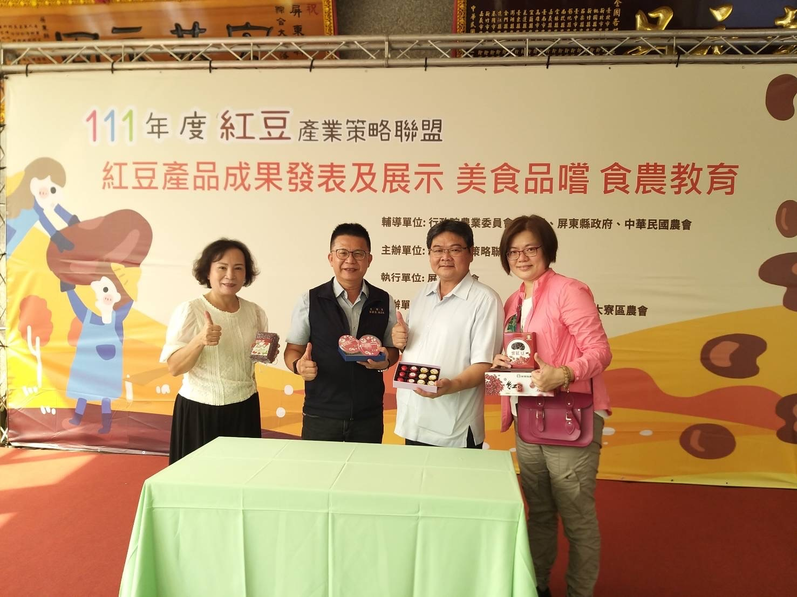
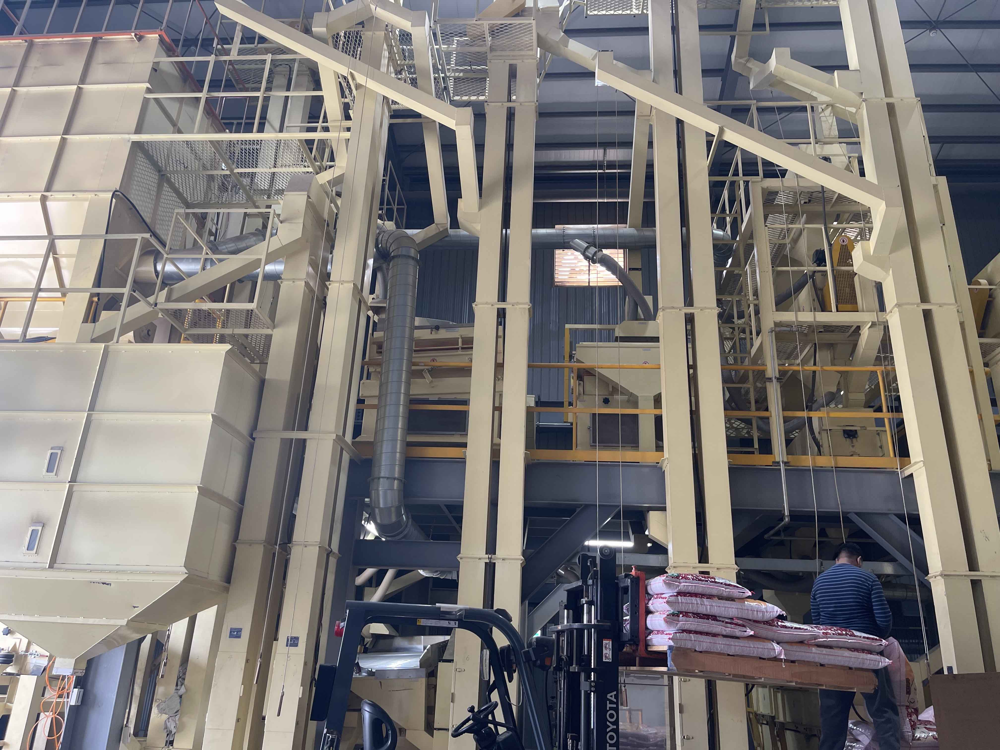

紅豆產業策略聯盟食農教育（圖／農糧署）

紅豆採後處理場（圖／農糧署）
擴大契作收購量250公噸，輔導採後分級包裝倉儲，穩定產地合理價格，維持於36元/台斤以上，總豆平均收購價格86.6元(公斤)。
1.輔導產地擴大採後分級包裝及倉儲量3,300公噸。
2.輔導農禾公司洽商華順商業股份公司及富味鄉公司食品廠購買計2,200公噸進行紅豆加工。
1.推動辦理第4場次小組工作研討會(含生產、加工、行銷講習教育訓練)。
2.辦理食農教育及美食體驗2場次。
3.媒合產品加工及其成果展示1場次。
4.穩定維持產地價格，照顧農友收益。